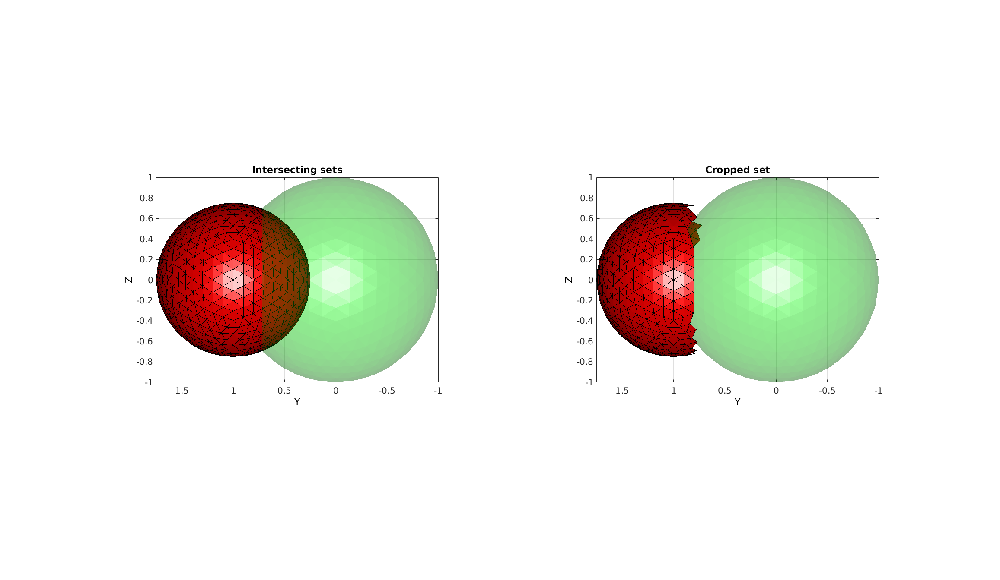

simplexImIntersect
Below is a demonstration of the features of the simplexImIntersect function
Contents
clear; close all; clc;
Syntax
[logicOut]=simplexImIntersect(F1,V1,V2,voxelSize);
Description
This function computes a logic which is true for vertices in V2 which are deemed outside of the simplex defined by the faces array F1 and the vertices array V1. Points are deemed outside based on the patch2Im function, i.e. the following steps are used: 1) The simplex is converted to an image where voxels are 1 if they are in or on the simplex and 0 if the are outside. 2) The vertices in V2 are converted to image coordinates in this image 3) The image coordinates are converted to image voxel indices 4) Voxel indices which point at voxels which are 0 in the simplex image are outside.
The image constructed uses the optional input voxelSize (default if not provided is half of the mean edge size of the input simplex). Although all of the vertices where logicOut is 1 are out not all that are 0 in logicOut are truely in. The level of accuracy of the logic depends on the voxel size. If set too high then too many points are deemed outside. If set too small then computational time is very large.
See also patch2im
Examples
clear; close all; clc;
Plot settings
faceAlpha1=1; faceAlpha2=0.25; fontSize=15;
Create example geometries
[F1,V1,~]=geoSphere(3,1); %First simplex [F2,V2,~]=geoSphere(3,0.75); %Second simplex V2(:,2)=V2(:,2)+1; %Shift second sphere
Determine optional voxel size input from mean edge size
[D1]=patchEdgeLengths(F1,V1); [D2]=patchEdgeLengths(F2,V2); d=mean([D1(:);D2(:)]); voxelSize=d/2;
Find points outside of a simplex
[logicOut]=simplexImIntersect(F1,V1,V2,voxelSize); logicFacesOut=all(logicOut(F2),2);
Visualize results
cFigure; subplot(1,2,1); title('Intersecting sets') gpatch(F1,V1,'g','none',faceAlpha2); gpatch(F2,V2,'r','k',faceAlpha1); axisGeom; view(-90,0); camlight headlight; subplot(1,2,2); title('Cropped set') gpatch(F1,V1,'g','none',faceAlpha2); gpatch(F2(logicFacesOut,:),V2,'r','k',faceAlpha1); axisGeom; view(-90,0); camlight headlight; drawnow;

GIBBON www.gibboncode.org
Kevin Mattheus Moerman, gibbon.toolbox@gmail.com
GIBBON footer text
License: https://github.com/gibbonCode/GIBBON/blob/master/LICENSE
GIBBON: The Geometry and Image-based Bioengineering add-On. A toolbox for image segmentation, image-based modeling, meshing, and finite element analysis.
Copyright (C) 2017 Kevin Mattheus Moerman
This program is free software: you can redistribute it and/or modify it under the terms of the GNU General Public License as published by the Free Software Foundation, either version 3 of the License, or (at your option) any later version.
This program is distributed in the hope that it will be useful, but WITHOUT ANY WARRANTY; without even the implied warranty of MERCHANTABILITY or FITNESS FOR A PARTICULAR PURPOSE. See the GNU General Public License for more details.
You should have received a copy of the GNU General Public License along with this program. If not, see http://www.gnu.org/licenses/.